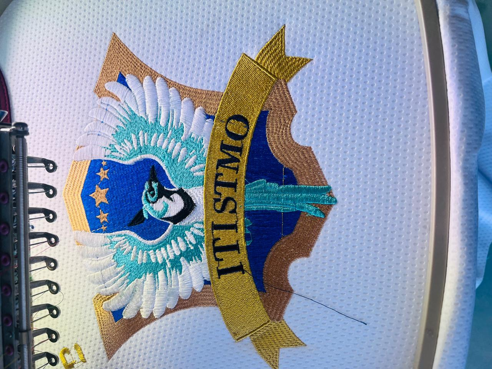

La decisión más importante antes de bordar
La calidad del resultado final de un bordado digital se decide mucho antes de que la máquina dé su primera puntada. Se decide en el momento en que se elige —o se diseña— el motivo que será bordado. Un buen diseño bien ponchado producirá un bordado limpio, duradero y fiel. Un diseño mal elegido o mal adaptado para el bordado producirá exactamente lo contrario, sin importar qué tan buena sea la máquina o los hilos.
En Bortex Bordados Juchitán, trabajamos con clientes de todo tipo: desde empresas que quieren bordar su logotipo en uniformes, hasta personas que quieren llevar un diseño tradicional de Juchitán, Oaxaca sobre una gorra o playera. Y en todos los casos, la pregunta más importante siempre es la misma: ¿es este diseño apto para el bordado digital? Esta guía te ayuda a responderla.
"El bordado digital empieza con el diseño. Si el diseño es sólido, el resultado será sólido. Si el diseño tiene problemas, la máquina los ampliará, no los resolverá."
Características de un buen diseño para bordado digital
No todos los diseños que funcionan bien en pantalla o en papel funcionan igual de bien en bordado. El hilo tiene sus propias reglas: tiene grosor, dirección y tensión. Un diseñador con experiencia en bordado digital conoce esas reglas y las respeta desde el primer trazo. Estas son las características que debe tener un buen diseño para bordado:
1. Formas con contornos claros y definidos
El bordado digital trabaja mejor con formas que tienen bordes nítidos y bien delimitados. Las grandes áreas de color sólido con contornos claros se ejecutan con precisión y se ven limpias en la tela. Los diseños con bordes difusos, gradientes fluidos o sombras muy suaves son más difíciles de reproducir fielmente, porque la puntada tiene un tamaño mínimo que limita el nivel de detalle alcanzable.
- Ideal: Formas geométricas, siluetas definidas, flores con pétalos bien delimitados, texto con tipografía clara.
- Difícil: Fotografías realistas, ilustraciones con degradados suaves, diseños con muchos trazos muy finos superpuestos.
2. Tamaño mínimo de elementos
Existe un tamaño mínimo por debajo del cual el bordado digital pierde definición. Como regla general, ningún elemento del diseño debería ser más pequeño que 4–5 mm en la prenda final. El texto es el elemento más afectado por esta limitación: las letras muy pequeñas (menos de 6 mm de alto) tienden a perder legibilidad en el bordado porque la máquina no puede ejecutar trazos tan finos como una impresora.
- Texto legible: Mínimo 6–8 mm de alto para letras mayúsculas. Tipografías sans-serif (sans serif sin remates finos) funcionan mejor que tipografías con serif en tamaños pequeños.
- Detalles finos: Líneas cuyo grosor sea inferior a 1.5 mm en la prenda final deben engrosarse o simplificarse antes del ponchado.
3. Paleta de colores acotada y contrastante
El bordado digital puro en colores resulta más limpio y legible cuando los colores están claramente diferenciados. Los diseños con muchos colores muy similares entre sí (por ejemplo, cinco tonos distintos de verde) son difíciles de ejecutar con precisión porque la máquina necesita cambiar de hilo en cada transición de color.
- Óptimo: Diseños de 2 a 8 colores bien contrastados. Los logos corporativos con 2–4 colores son perfectos para el bordado digital.
- Complejo: Diseños de más de 12 colores o con degradados cromáticos muy graduales requieren mayor tiempo de ponchado y pueden resultar en un volumen de puntadas muy elevado que dificulte el bordado en telas delgadas.
4. Simplicidad sin perder personalidad
Un buen diseño para bordado digital no es un diseño pobre o aburrido: es un diseño bien editado. La simplificación es el arte de eliminar lo que el hilo no puede reproducir para conservar lo que sí puede, sin perder la esencia y el impacto visual del diseño original. Los mejores ponchadores son también excelentes editores visuales.
- Elimina sombras internas excesivas y reemplázalas con cambios de color sólido.
- Simplifica los elementos muy pequeños que no se verán bien en la tela.
- Refuerza los contornos de los elementos principales para que queden bien definidos sobre cualquier color de tela.
- Conserva los elementos que definen la identidad del diseño y que la prenda sea reconocible a primera vista.
5. Formatos de archivo adecuados
Para iniciar el proceso de ponchado (digitalización), el diseño original debe entregarse en un formato que permita trabajar con vectores o con la mejor resolución posible:
- Ideal: Archivos vectoriales .AI (Adobe Illustrator), .EPS o .SVG. Los vectores permiten escalar el diseño sin pérdida de calidad.
- Aceptable: Imágenes rasterizadas .PNG o .JPG en alta resolución (mínimo 300 dpi al tamaño real de la prenda). El fondo transparente en PNG facilita enormemente el trabajo del ponchador.
- Evitar: Imágenes comprimidas de baja resolución, capturas de pantalla o fotos de logos impresos en papel. Cuanto más borrosa sea la imagen original, más difícil será obtener un bordado limpio.
"Un buen archivo de diseño le da al ponchador la información que necesita. Un archivo malo le da trabajo innecesario que encarece el proceso y dificulta el resultado."
Errores comunes al elegir un diseño para bordado
En nuestra experiencia en Bortex Bordados Juchitán, estos son los errores más frecuentes que vemos cuando los clientes traen sus diseños para ponchar:
- Llevar una fotografía esperando el mismo resultado: Una fotografía tiene miles de colores y una profundidad de detalle que el bordado no puede reproducir. El ponchador debe transformar la foto en un diseño simplificado y estilizado, lo que cambia significativamente el resultado final.
- Subestimar el efecto del tamaño: Un diseño que se ve bien en 10 cm puede no verse bien en 5 cm, porque los elementos más pequeños pierden definición. El tamaño final en la prenda debe definirse desde el principio del proceso.
- Usar tipografías decorativas con trazos muy finos: Las letras con caligrafía muy ornamental a menudo tienen trazos tan finos que el hilo no puede seguir. Si el texto es un elemento importante del diseño, conviene elegir tipografías más robustas o aumentar el tamaño del texto.
- No considerar el color de la tela: Un diseño en colores claros sobre tela negra puede requerir un estabilizador de color (fondo de puntadas blancas) que no es necesario en tela clara. El color de la prenda afecta directamente la paleta del bordado.
- Complicar el diseño innecesariamente: Más colores y más detalles no siempre significan mejor resultado. En bordado, la claridad visual y el contraste son más efectivos que la complejidad.
Diseños inspirados en Juchitán que funcionan mejor en bordado digital
Los motivos del bordado tradicional de Juchitán y el Istmo de Tehuantepec son, por su propia naturaleza histórica, algunos de los diseños más adaptados al bordado que existen. Fueron creados por bordadoras expertas que entendían perfectamente cómo se comporta el hilo sobre la tela. Esto los hace ideales para el bordado digital. Estos son los que mejor funcionan:
- Hibisco simplificado: Una flor de hibisco con 5–6 pétalos bien definidos, con contorno visible y centro destacado, es quizás el motivo más versátil del repertorio juchiteco para bordado digital. Funciona desde 4 cm de diámetro en adelante y luce impactante en prácticamente cualquier prenda y cualquier color de tela.
- Iguana estilizada: La iguana verde del Istmo, cuando se trabaja en un estilo de silueta limpia con detalles de escamas simplificados, produce un bordado reconocible y con mucho carácter. Ideal para gorras, camisas y artículos promocionales de eventos o restaurantes con temática regional.
- Mariposa con alas simétricas: La simetría bilateral de la mariposa la convierte en un motivo ideal para el bordado digital. Sus dos alas ofrecen gran superficie para el juego de colores, y su silueta es inmediatamente reconocible incluso en tamaños medianos.
- Motivos geométricos zapotecas: Las grecas y rombos de la tradición geométrica zapoteca son formas completamente angulares que se ejecutan con precisión perfecta en bordado digital. Son ideales para cenefas, bordes de prendas y diseños de bandas repetidas.
- Combinación flor + texto: Un hibisco o bugambilia estilizado combinado con el nombre de una empresa o evento es una de las fórmulas más efectivas para lograr un bordado que sea a la vez culturalmente evocador y funcionalmente identificador de marca.
- Colibrí libando una flor: La composición de un colibrí acercándose a una flor (hibisco o bugambilia) es un motivo completo que narra una historia en miniatura. Cuando se estiliza correctamente, produce un bordado de alta calidad visual que funciona muy bien en prendas de gama media-alta.
¿Cómo funciona el proceso de ponchado en Bortex?
Una vez que tienes claridad sobre tu diseño, el proceso en Bortex Bordados Juchitán es sencillo y transparente:
- Paso 1 — Envío del diseño: Nos compartes tu archivo de diseño (vectorial o imagen de alta resolución) junto con las indicaciones de tamaño, colores y tipo de prenda donde se bordará.
- Paso 2 — Análisis y cotización: Nuestro equipo revisa el diseño, evalúa su complejidad y te envía una cotización detallada del costo de ponchado y bordado.
- Paso 3 — Ponchado del diseño: Un ponchador especializado traduce tu diseño a un archivo de bordado con instrucciones precisas de color, dirección y densidad de puntada.
- Paso 4 — Muestra de bordado: Antes de producir la serie completa, bordamos una muestra en el tipo de tela que usarás para que apruebes el resultado.
- Paso 5 — Producción: Una vez aprobada la muestra, la máquina produce tu pedido completo con la misma calidad que la muestra, pieza por pieza.
¿Tienes un diseño en mente o quieres usar uno de nuestros motivos tradicionales de Juchitán? Contáctanos y te asesoramos sin compromiso sobre las mejores opciones para tu proyecto.
¿Listo para ponchar tu diseño? Solicita tu cotización gratis.
Solicitar cotización gratis